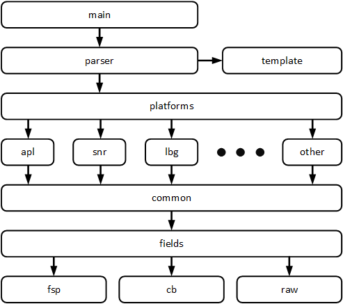

Intel Pad to Macro (intelp2m) converter
This utility allows one to convert the configuration DW0/1 register values from an inteltool dump to coreboot macros.
cd util/intelp2m
make
./intelp2m -h
./intelp2m -file /path/to/inteltool.log
Platforms
It is possible to use templates for parsing inteltool.log files.
To specify such a pattern, use the option -t <template number>.
-t
template type number
0 - inteltool.log (default)
1 - gpio.h
2 - your template
For example, using template type 1, you can parse gpio.h from an existing board in the coreboot project.
./intelp2m -t 1 -file coreboot/src/mainboard/yourboard/gpio.h
You can also add a template to ‘parser/template.go’ for your file type with the configuration of the pads.
platform type is set using the -p option (Sunrise by default):
-p string
set up a platform
snr - Sunrise PCH with Skylake/Kaby Lake CPU
lbg - Lewisburg PCH with Xeon SP CPU
apl - Apollo Lake SoC
cnl - CannonLake-LP or Whiskeylake/Coffeelake/Cometlake-U SoC
adl - AlderLake PCH
(default "snr")
./intelp2m -p <platform> -file path/to/inteltool.log
Packages

Bit fields in macros
Use the -fld=cb option to only generate a sequence of bit fields in
a new macro:
./intelp2m -fld cb -p apl -file ../apollo-inteltool.log
_PAD_CFG_STRUCT(GPIO_37, PAD_FUNC(NF1) | PAD_TRIG(OFF) | PAD_TRIG(OFF), \
PAD_PULL(DN_20K)), /* LPSS_UART0_TXD */
Raw DW0, DW1 register value
To generate the gpio.c with raw PAD_CFG_DW0 and PAD_CFG_DW1 register values you need to use the -fld=raw option:
./intelp2m -fld raw -file /path/to/inteltool.log
_PAD_CFG_STRUCT(GPP_A10, 0x44000500, 0x00000000),
./intelp2m -iiii -fld raw -file /path/to/inteltool.log
/* GPP_A10 - CLKOUT_LPC1 */
/* DW0: 0x44000500, DW1: 0x00000000 */
/* DW0: 0x04000100 - IGNORED */
/* PAD_CFG_NF(GPP_A10, NONE, DEEP, NF1), */
_PAD_CFG_STRUCT(GPP_A10, 0x44000500, 0x00000000),
Macro Check
After generating the macro, the utility checks all used fields of the configuration registers. If some field has been ignored, the utility generates field macros. To not check macros, use the -n option:
./intelp2m -n -file /path/to/inteltool.log
In this case, some fields of the configuration registers DW0 will be ignored.
PAD_CFG_NF_IOSSTATE_IOSTERM(GPIO_38, UP_20K, DEEP, NF1, HIZCRx1, DISPUPD),
PAD_CFG_NF_IOSSTATE_IOSTERM(GPIO_39, UP_20K, DEEP, NF1, TxLASTRxE, DISPUPD),
Information level
The utility can generate additional information about the bit fields of the DW0 and DW1 configuration registers. Using the options -i, -ii, -iii, -iiii you can set the info level from 1 to 4:
./intelp2m -i -file /path/to/inteltool.log
_PAD_CFG_STRUCT(GPIO_39, PAD_FUNC(NF1) | PAD_RESET(DEEP) | PAD_TRIG(OFF),\
PAD_PULL(UP_20K) | PAD_IOSTERM(DISPUPD)), /* LPSS_UART0_TXD */
./intelp2m -ii -file /path/to/inteltool.log
./intelp2m -iii -file /path/to/inteltool.log
./intelp2m -iiii -file /path/to/inteltool.log
/* GPIO_39 - LPSS_UART0_TXD */
/* DW0: 0x44000400, DW1: 0x00003100 */ --> (ii)
/* DW0 : PAD_TRIG(OFF) - IGNORED */ --> (iii)
/* PAD_CFG_NF_IOSSTATE_IOSTERM(GPIO_39, UP_20K, DEEP, NF1, TxLASTRxE,
DISPUPD), */ --> (iiii)
_PAD_CFG_STRUCT(GPIO_39, PAD_FUNC(NF1) | PAD_RESET(DEEP) | PAD_TRIG(OFF),
PAD_PULL(UP_20K) | PAD_IOSTERM(DISPUPD)),
If the -n switch was used and macros was generated without checking:
/* GPIO_39 - LPSS_UART0_TXD */ --> (i)
/* DW0: 0x44000400, DW1: 0x00003100 */ --> (ii)
/* DW0: PAD_TRIG(OFF) - IGNORED */ --> (iii)
/* _PAD_CFG_STRUCT(GPIO_39, PAD_FUNC(NF1) | PAD_RESET(DEEP) |
PAD_TRIG(OFF), PAD_PULL(UP_20K) | PAD_IOSTERM(DISPUPD)), */ --> (iiii)
PAD_CFG_NF_IOSSTATE_IOSTERM(GPIO_39, UP_20K, DEEP, NF1, TxLASTRxE, \
DISPUPD),
Ignoring Fields
Utilities can generate the PAD_CFG_STRUCT macro and exclude fields from it that are not in the corresponding PAD_CFG*() macro:
./intelp2m -iiii -fld cb -ign -file /path/to/inteltool.log
/* GPIO_39 - LPSS_UART0_TXD */
/* DW0: 0x44000400, DW1: 0x00003100 */
/* DW0: PAD_TRIG(OFF) - IGNORED */
/* PAD_CFG_NF_IOSSTATE_IOSTERM(GPIO_39, UP_20K, DEEP, NF1,
TxLASTRxE, DISPUPD), */
_PAD_CFG_STRUCT(GPIO_39, PAD_FUNC(NF1) | PAD_RESET(DEEP), \
PAD_PULL(UP_20K) | PAD_IOSTERM(DISPUPD)),
FSP-style macro
The utility allows one to generate macros that include fsp/edk2-platform style bitfields:
./intelp2m -i -fld fsp -p lbg -file ../crb-inteltool.log
{ GPIO_SKL_H_GPP_A12, { GpioPadModeGpio, GpioHostOwnAcpi, GpioDirInInvOut,
GpioOutLow, GpioIntSci | GpioIntLvlEdgDis, GpioResetNormal, GpioTermNone,
GpioPadConfigLock }, /* GPIO */
./intelp2m -iiii -fld fsp -p lbg -file ../crb-inteltool.log
/* GPP_A12 - GPIO */
/* DW0: 0x80880102, DW1: 0x00000000 */
/* PAD_CFG_GPI_SCI(GPP_A12, NONE, PLTRST, LEVEL, INVERT), */
{ GPIO_SKL_H_GPP_A12, { GpioPadModeGpio, GpioHostOwnAcpi, GpioDirInInvOut,
GpioOutLow, GpioIntSci | GpioIntLvlEdgDis, GpioResetNormal, GpioTermNone,
GpioPadConfigLock },
Supported Chipsets
Sunrise PCH, Lewisburg PCH, Apollo Lake SoC, CannonLake-LP SoCs